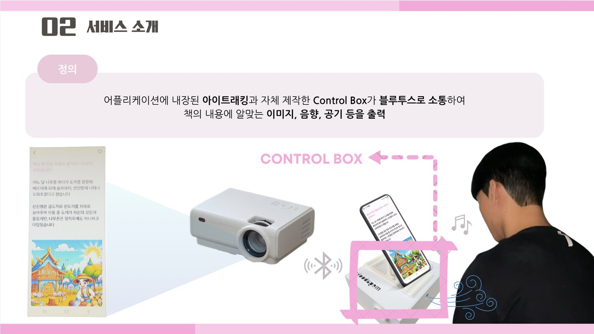
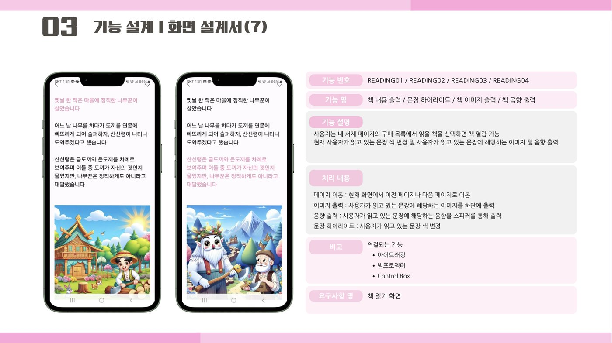
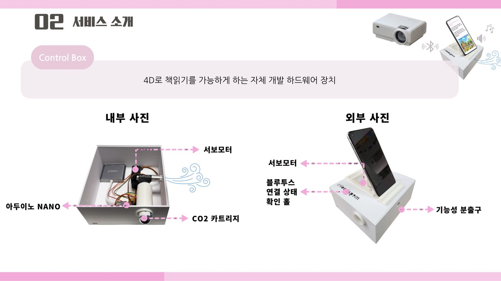
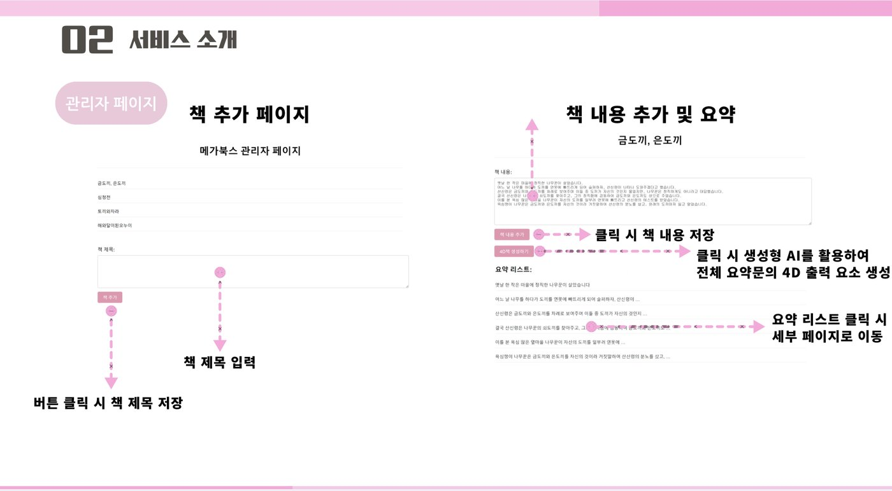

{kind=link}
시선 추적
스마트폰 전면 카메라로 시선 좌표를 얻고, 화면에 표시된 문장 중 어느 줄을 읽고 있는지 판정합니다.
HCI / EYE TRACKING
눈으로 따라 읽는 문장에 맞춰
장면이 그림·소리·바람으로 펼쳐지는 독서 서비스.

01 / OVERVIEW
팀은 교사 대상 설문 자료를 근거로, 숏폼 콘텐츠 소비와 독서량 감소가 청소년 문해력 저하의 주요 원인으로 꼽힌다는 점에 주목했습니다. 문해력의 기반이 되는 독서 습관은 유년기에 형성되므로, 아이들이 책에 흥미를 느낄 수 있도록 여러 감각을 자극하는 독서 경험을 목표로 삼았습니다.
메가북스는 앱에 내장한 아이트래킹으로 사용자가 지금 읽고 있는 문장을 파악하고, 그 문장에 맞는 이미지와 음향을 재생하며, 자체 제작한 Control Box로 공기를 분출합니다. 전래동화를 첫 콘텐츠로 구성했습니다.
스마트폰 전면 카메라로 시선 좌표를 얻고, 화면에 표시된 문장 중 어느 줄을 읽고 있는지 판정합니다.
문장마다 연결된 이미지·음향·공기 분출 여부에 따라 화면, 스피커, Control Box로 효과를 냅니다.
관리자 페이지에서 책 내용을 등록하면 생성형 AI로 문장별 이미지와 음향을 만들어 저장합니다.
TECHNICAL DOCUMENTATION
MegaBooks 조직의 Server·App 저장소 코드와 팀 발표 자료를 바탕으로 정리했습니다.
02 / ARCHITECTURE
책 한 권은 문장 단위 데이터로 저장됩니다. 각 문장에는 본문, 이미지 URL, 음향 URL, 공기 분출 여부가 함께 담기며, 앱은 서버 API로 이 목록을 받아 읽기 화면을 구성합니다.
읽고 있는 문장에 맞춰 출력
| 저장소 | 내용 | 규모 · 기간 |
|---|---|---|
| Server 공개 | Spring Boot 백엔드 — 회원, 도서, 주문, 서재, 문장 콘텐츠 API | 커밋 178개 · 2024.04 – 2024.11 |
| App 비공개 | Android 앱 — 아이트래킹 읽기 화면, 도서 탐색·구매, 블루투스 연결 | 커밋 40개 · 2024.04 – 2024.08 |
| AI 비공개 | README만 있고 코드는 올라와 있지 않음 | 커밋 1개 · 2024.04 |
03 / GAZE TO SENTENCE
읽기 화면은 한 페이지에 문장 세 개를 위아래로 배치하고, 그 아래에 문장 이미지를 표시합니다. 앱은 시선 좌표가 어느 문장 영역에 들어오는지를 확인해, 사용자가 새 문장으로 눈을 옮긴 순간 출력을 바꿉니다.
마지막으로 판정한 줄을 기억해 두고, 시선이 다른 줄로 옮겨졌을 때만 효과를 바꿉니다. 음향 재생 중에는 판정을 멈춰 효과가 겹치거나 끊기지 않도록 했습니다.

04 / 4D OUTPUT
| 감각 | 출력 장치 | 문장 데이터 | 앱 동작 |
|---|---|---|---|
| 시선 표시 | 앱 화면 | sentence | 읽고 있는 문장의 글자색을 분홍색으로 강조 |
| 시각 | 화면 · 빔프로젝터 | image_url | 문장 이미지를 읽기 화면 하단에 표시. 발표 구성에서는 빔프로젝터로 크게 투사 |
| 청각 | 스피커 | audio_url | 문장 음향을 재생하고, 끝나면 시선 판정을 재개 |
| 촉각 | Control Box | is_air | 공기 분출 문장이면 페어링된 Control Box에 Bluetooth 신호 전송 |
팀에서 박근호는 앱의 신호를 받아 공기를 분출하는 Control Box 하드웨어 제작을 맡았습니다. 분출부와 제어부, 스마트폰을 거치하는 하우징까지 앱과 함께 동작하는 실물 장치로 구성했습니다.
Control Box는 4D 읽기를 위해 팀이 자체 개발한 하드웨어입니다. 발표 자료에 따르면 내부에 아두이노 나노, 서보모터, CO2 카트리지를 넣고, 외부에는 스마트폰 거치대와 블루투스 연결 상태 확인 홀, 분출구를 두었습니다.
앱은 페어링된 기기 목록에서 Control Box를 골라 Bluetooth SPP(RFCOMM) 소켓으로 연결하고, 공기 분출 문장을 읽을 때 한 글자짜리 트리거 신호를 보냅니다. 서보모터로 CO2 카트리지를 작동시키는 펌웨어는 조직 저장소에 포함되어 있지 않아, 장치 내부 동작은 발표 자료 기준으로 설명했습니다.

05 / CONTENT PIPELINE
동화 한 권에 필요한 이미지와 음향을 사람이 모두 준비하기는 어렵습니다. 팀은 관리자 페이지에서 책 제목과 내용을 등록하고 4D책 생성하기를 누르면, 생성형 AI가 내용을 문장 단위 요약 리스트로 나누고 각 문장의 출력 요소를 만들도록 구성했습니다.

서버는 Firebase Realtime Database의 output_data/{책 제목} 아래 문장 노드를 순서대로 읽어 sentence, image_url, audio_url, is_air를 목록으로 반환합니다.
관리자 페이지와 AI 생성 코드는 조직 저장소에 없습니다(AI 저장소는 README만 존재). 이 절의 제작 과정은 발표 자료를, 데이터 구조는 Server 코드를 기준으로 정리했습니다.
06 / SERVER
서버는 Java 17과 Spring Boot 3.2로 작성했으며, MySQL과 Spring Data JPA·QueryDSL로 데이터를 다룹니다. Spring Security와 JWT로 인증하고, Swagger(springdoc)로 API 문서를 제공합니다. 앱은 Retrofit으로 이 API를 호출합니다.
가입·로그인과 JWT 발급, 이름·비밀번호 변경
주간·월간 베스트, 키워드 검색, 도서 상세 조회
도서 구매와 중복 주문 확인, 구매한 책 목록
도서 좋아요 등록·취소와 상태 확인
Firebase에서 책의 문장별 4D 데이터 조회
공통 응답 형식, 예외 코드, AOP 로깅
주간·월간 베스트는 최근 7일·30일 동안의 주문 도서를 모아 판매 금액 합계가 큰 순서로 정렬합니다. QueryDSL로 주문 기간 조건과 집계를 한 쿼리로 작성하고 페이지 단위로 반환합니다.
저장소에는 Gradle 빌드 후 Docker 이미지를 Docker Hub에 올리고, SSH로 서버에 접속해 컨테이너를 교체하는 GitHub Actions 워크플로와 Dockerfile이 있습니다. 설정 파일은 GitHub Secrets에서 빌드 시점에 만들어 저장소에 포함하지 않습니다.
07 / DEMO
08 / ENGINEERING NOTES
시선의 가로 좌표는 사용하지 않고, 세로 좌표가 문장 영역 상단부터 50px 안에 있는지로 줄을 구분합니다. 문장을 크게 띄운 세 줄 레이아웃에서는 단순하고 안정적이지만, 줄 간격이 좁거나 화면 크기가 다른 기기에서는 판정 범위와 카메라 위치 설정을 다시 맞춰야 합니다.
음향이 끝날 때까지 시선 판정을 멈추기 때문에 효과가 겹치지 않는 대신, 음향이 길면 다음 문장으로 눈을 옮겨도 반응이 늦어집니다. 문장 길이에 맞춘 음향 길이 조정이나 재생 중단 규칙이 개선 방향입니다.
앱은 Control Box에 공기 분출 여부만 알리는 한 글자 신호를 보내고 응답은 받지 않습니다. 효과 종류나 세기를 늘리려면 명령 형식을 정의하고 장치 상태를 확인하는 통신이 필요합니다.
이 페이지의 코드 설명은 Server와 App 저장소를 기준으로 합니다. 관리자 페이지, AI 콘텐츠 생성, Control Box 펌웨어는 저장소에 없어 발표 자료로 설명했으며, 인식 정확도나 반응 지연 같은 측정 결과는 포함하지 않았습니다.
{kind=link}
{kind=link}
{kind=link}